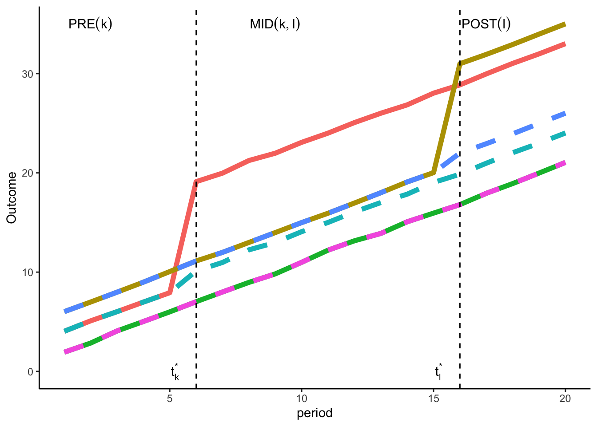

10 Multi Period, Multi Group and Variation in Treatment Timing
trueeffect <- 10
intercep <- 10
N <- 5000
T <- 20
early <- 5
late <- 15
datagen <- function(T, N, group){
timeT <- rep(1:T, each = N)
treatT <- rep(1, length(timeT))
groupT <- rep(group, length(timeT))
df <- data.frame(time = timeT, treat = treatT, group = groupT)
return(df)
}
dftreat <- datagen(T, N, 1) # early treatment
dftreat2 <- datagen(T, N, 2) # late treatment
dfuntreat <- datagen(T, N, 3) # untreated
data <- rbind(dftreat, dftreat2, dfuntreat)
# generating policy variables
data <- data %>%
mutate(policy = 0, policy = ifelse(group == 1 & time > early, 1, policy), policy = ifelse(group == 2 & time > late, 1, policy),
dumtreat1 = ifelse(group == 1, 1, 0), dumtreat2 = ifelse(group == 2, 1, 0), dumtreat3 = ifelse(group == 3, 1, 0))
e <- rnorm(nrow(data), 0, 5)
data <- data %>% mutate(Y = 1 + trueeffect*dumtreat1*policy + trueeffect*dumtreat2*policy + time + dumtreat1*2 + dumtreat2*4 + e,
Ypot = 1 + 1*dumtreat1*policy + 1*dumtreat2*policy + time + dumtreat1*2 + dumtreat2*4 + e)
datasum <- data.frame(data %>%
group_by(group, time) %>%
summarise(meanY = mean(Y), meanYpot = mean(Ypot))
)## `summarise()` has grouped output by 'group'. You can override using the
## `.groups` argument.# data for potential outcome
datasumpot <- datasum %>% dplyr::select(c(group, time, meanYpot)) %>%
mutate(group = 10*group)
datasum <- datasum %>% dplyr::select(-c(meanYpot))
colnames(datasumpot) <- c("group", "time", "meanY")
datasum <- rbind(datasum, datasumpot)
vlines <- data.frame(xint = c(6, 16))
datasum$group = factor(datasum$group)
ggplot(datasum, aes(x = time, y = meanY, group = group)) + geom_line(aes(linetype = group, color = group),size = 2) + #geom_point(aes(shape = group, size = 3)) +
scale_linetype_manual(name = "Linetype",values = c("1" = 1, "2" = 1, "3" = 1, "10" = 2, "20" = 2, "30" = 2), guide = "none") +
theme(panel.grid.major = element_blank(), panel.grid.minor = element_blank(),
panel.background = element_blank(), axis.line = element_line(color = "black"), legend.position = "none") + xlab("period") + ylab("Outcome") +
geom_vline(data = vlines, aes(xintercept = xint), linetype = "dashed") +
annotate(x = c(5.2, 15.2, 2, 9, 17), y = c(0, 0, 35, 35, 35), label = c(bquote(t[k]^"*"), bquote(t[l]^"*"), "PRE(k)", "MID(k,l)", "POST(l)"), geom = "text", parse = TRUE)## Warning: Using `size` aesthetic for lines was deprecated in ggplot2 3.4.0.
## i Please use `linewidth` instead.
## This warning is displayed once every 8 hours.
## Call `lifecycle::last_lifecycle_warnings()` to see where this warning was
## generated.
The figure above depicts the case of three groups: \(i)\) early treated (treatment starting from the \(6^{th}\) period, \(t_{k}^{*}\)); \(ii)\) late treated (\(16^{th}\) period, \(t_{k}^{*}\)); and untreated group. The figure provides an example of staggered treatment adoption. This means that units are treated at different points in time and once treated they are always treated. The solid lines represent observed outcomes, whereas the dotted lines are the potential outcomes. For the untreated group and not yet treated periods the observed outcomes are also the potential outcomes.
To go further, let’s introduce some notations.
- \(T\) is defined as the number of periods.
- Groups are defined based on the timing of the treatment of the unit. \(G_{i}\) indicates the group of the unit and
all set of groups include \(\zeta \in \{2,\; ...., T,\;T+1\}\). Units that are treated in period 1 are dropped in this setup.
One reason to do so is that no pretreatment outcomes are observed for this group, which means that it is not possible to
use the parallel trend assumption. T+1 group is used to denote units that remain untreated throughout the period
(never treated group). It is possible that eventually all units are treated. In this case, one can limit the data to time
period with not yet treated group.
- \(Y_{it}(g)\) is denoted as the outcome of unit \(i\) observed at time \(t\) when the unit was treated in period \(g\).
- \(Y_{it}(0)\) is the potential outcome of unit \(i\) at time \(t\) had the unit not been treated.
There are a few assumptions that we need to consider. There are more assumputions highlighted in (callaway2022?) paper. But I will focus on two main ones.
Staggered Treatment Assignment. For all units and for all \(t = 2,\;3,...,\;T\), \(D_{it-1}=1\) implies \(D_{it}=1\). This means that once a unit is treated, it remains treated.
Parallel Trend Assumption for Multi Period and Variation in Treatment Timing. For all \(t = 2,\;3,...,\;T\)
\[\begin{equation} E[\Delta Y_{it}(0)|G=g]=E[\Delta Y_{it}(0)] \end{equation}\]
This basically says that the average pathway of group g if it was untreated (potential outcome) would be same as the average pathway of other group (untreated) for each time period. This holds for each group \(g \in \zeta\). In other words, this can be thought as an extension of the parallel trend assumption for \(2 \times 2\), but in this case it should hold for each \(g \in \zeta\) and for each time period \(t\). The parallel trend described in the assumption above is highly general, meaning that it assumes parallel trends for any groups. However, this may not be the case as groups can be very different in observed characteristics and can have different pathways in absence of the treatment. Hence, there are other versions of parallel trend assumption to consider:
a. parallel trend holds only for groups with similar observed characteristics
b. parallel trend holds only for certain time periods
c. parallel trend holds only for those group who ever participate in the treatment